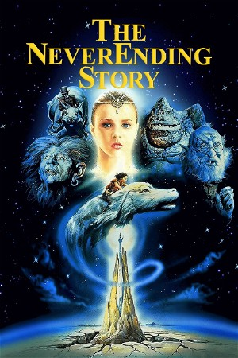

The NeverEnding Story (1984)
AdventureFantasyFamilyDrama
| Year | 1984 |
|---|---|
| Rating | US:PG / US:Rated PG |
| Genre | Adventure, Fantasy, Family, Drama |
While hiding from bullies in his school's attic, a young boy discovers the extraordinary land of Fantasia, through a magical book called The Neverending Story. The book tells the tale of Atreyu, a young warrior who, with the help of a luck dragon named Falkor, must save Fantasia from the destruction of The Nothing.